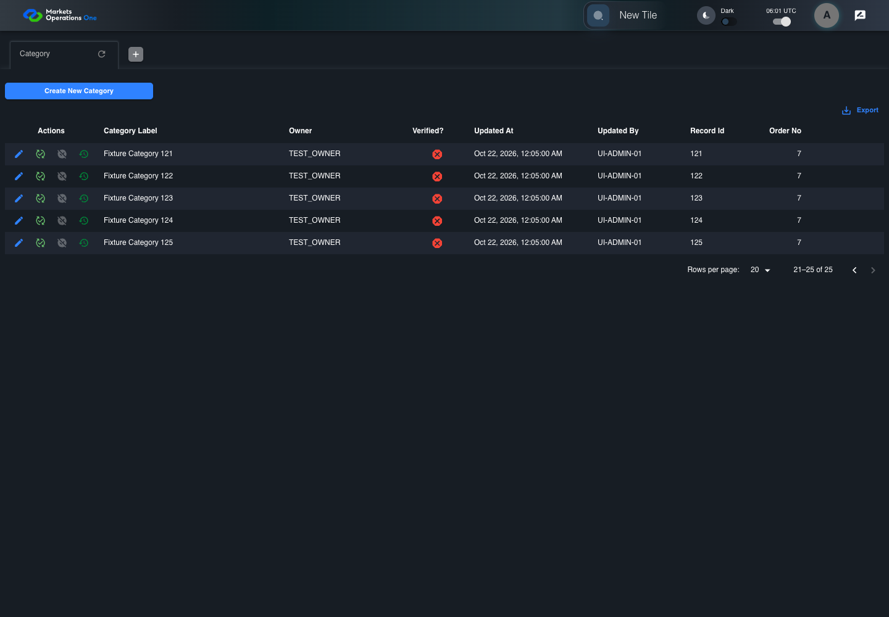

UI-ADM-GRD-001 actual administration UI with step evidence
PASS · application/run-050/ui-adm-grd-001-actual-administration-ui-with-step-evidence-826aba2dcdc3-attempt-1 · ACTUAL_APPLICATION_LOCAL_SERVICES
Actual current React administration screens. Controlled browser login supplies UI-ADMIN-01 and TEST_OWNER, or the declared SUPER_USER. Controlled BFF routes return the case-declared records. Other controlled saves persist submitted field values. This run establishes frontend handling only. It does not execute BFF validation, storage, audit generation, or authorization.
2026-10-22T06:01:10.153Z to 2026-10-22T06:01:13.561Z
Assertions and result · Artifact manifest · Exact run inputs and source hashes
Result SHA-256:165513c1ced79302f2c29cc49b9f3dd2637fd73dc3672af651b33aa891bd8829Machine observations
- source-resolved-pagination-target.json
93730d16b40aaa40fccfc6daf42fbe979061d256f33efbf86fe04530b8f44857 - ui-origin-admin-requests.json
a1716bdfa08d52a1b4fe51634cada5182ce5a44a4c4c9a807bdd1212fb1ba0b8
Screenshot capture: CAPTURED. Named frames: 7.
Step screenshot bindings: COMPLETE. 6/6 canonical steps have execution screenshots.
Bindings measure structural coverage only. They do not establish screenshot content quality or relevance.
Screenshot content review: NOT_REVIEWED. Recorded context: 0/7 frames. Identical image bytes: 4 repeated frames. Recorded context does not establish human visual review.
Canonical step timeline
Given Admin A is authenticated as fixture UI-ADMIN-01 with the case-specific permissions
Execution: PASSED.1. step-01 Visible state after step 1: Given Admin A is authenticated as fixture UI-ADMIN-01 with the case-specific permissions
2026-10-22T06:01:11.590Z · 1440×1000
Step: /Users/lushevol/code/github/ratan-release-impact/workbench/tasks/ui-test-coverage-20261022/test-cases.md:9848
SHA-256:e2fecea69f4b5e4c51bcbaa02ec757835da891f94c1c5ab30ccdcdea7ec7548fAnd Category response contains records 101 through 125
Execution: PASSED.
2. step-02 Visible state after step 2: And Category response contains records 101 through 125
2026-10-22T06:01:12.581Z · 1440×1000
Step: /Users/lushevol/code/github/ratan-release-impact/workbench/tasks/ui-test-coverage-20261022/test-cases.md:9849
SHA-256:013ab910de17a34d4a83dbed6c9c910989701afb80f03b338e604e8d2b8008d4When the Category administration grid finishes rendering
Execution: PASSED.
3. step-03 Visible state after step 3: When the Category administration grid finishes rendering
2026-10-22T06:01:12.671Z · 1440×1000
Step: /Users/lushevol/code/github/ratan-release-impact/workbench/tasks/ui-test-coverage-20261022/test-cases.md:9850
SHA-256:013ab910de17a34d4a83dbed6c9c910989701afb80f03b338e604e8d2b8008d4Image bytes match frame 2. An unchanged image can be valid for consecutive assertions. This match does not establish correct step content.
Then the current page of data grid with source identity "administration records" inside the "Category" administration tabpanel contains 20 data records
Execution: PASSED.4. step-04 Visible state after step 4: Then the current page of data grid with source identity "administration records" inside the "Category" administration tabpanel contains 20 data records
2026-10-22T06:01:12.767Z · 1440×1000
Step: /Users/lushevol/code/github/ratan-release-impact/workbench/tasks/ui-test-coverage-20261022/test-cases.md:9851
SHA-256:013ab910de17a34d4a83dbed6c9c910989701afb80f03b338e604e8d2b8008d4Image bytes match frame 3. An unchanged image can be valid for consecutive assertions. This match does not establish correct step content.
When Admin A clicks icon button with source identity "UNVERIFIED next-page target" inside the pagination footer of the Category administration data grid
Execution: PASSED.
5. step-05 Visible state after step 5: When Admin A clicks icon button with source identity "UNVERIFIED next-page target" inside the pagination footer of the Category administration data grid
2026-10-22T06:01:12.918Z · 1440×1000
Step: /Users/lushevol/code/github/ratan-release-impact/workbench/tasks/ui-test-coverage-20261022/test-cases.md:9852
SHA-256:f13e6fc62af4f3347757ae64b5d98b4d2399fa01acaf30705815c93907708a65Then the current page of data grid with source identity "administration records" inside the "Category" administration tabpanel contains 5 data records
Execution: PASSED.
6. step-06 Visible state after step 6: Then the current page of data grid with source identity "administration records" inside the "Category" administration tabpanel contains 5 data records
2026-10-22T06:01:13.006Z · 1440×1000
Step: /Users/lushevol/code/github/ratan-release-impact/workbench/tasks/ui-test-coverage-20261022/test-cases.md:9853
SHA-256:f13e6fc62af4f3347757ae64b5d98b4d2399fa01acaf30705815c93907708a65Image bytes match frame 5. An unchanged image can be valid for consecutive assertions. This match does not establish correct step content.
Additional named frames

The final visible state after the named test assertions.
2026-10-22T06:01:13.173Z · 1440×1000Step: Test source: /Users/lushevol/code/github/ratan-release-impact/workbench/e2e/audit-specs/admin-expanded.spec.ts:15
SHA-256:
f13e6fc62af4f3347757ae64b5d98b4d2399fa01acaf30705815c93907708a65Image bytes match frame 6. An unchanged image can be valid for consecutive assertions. This match does not establish correct step content.
Screenshots establish visible state only. Assertions and traces support functional claims.